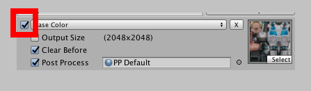
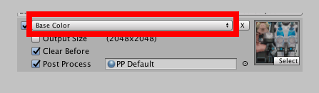
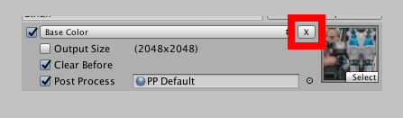
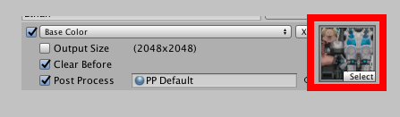
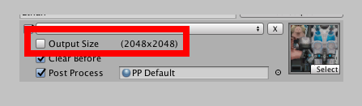
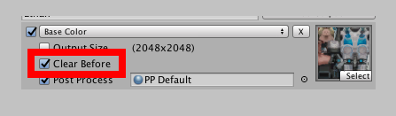
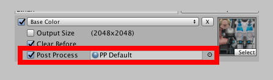

Outputs are the textures that get created and applied to your materials.
Enable/Disable
When calling baker.Bake(), all enabled outputs will be painted to. Disable this to prevent any more changes.

Usage
How this texture should be used by Materials. For more info on usages click here.

Remove
Remove this output.

Input Texture
The base input texture that will be painted to. It will initialize with a texture from the BakerMaterial, though you can change it if you like.

Size
By default outputs will use the Default texture size, but you can change this for individual textures. Smaller textures generate faster, so you may like to downsize while designing things, and then upsize before you export.

Clear
When enabled this will reset the texture every time Bake is called. Disabling it will give you a paint like effect.

Post Processing
A material used for processing the texture after all brushes have been painted to it. Post processing isn't mandatory, though it does fix seams and fills in blank space with the input texture. For Normal maps it will pack the normals, so if you are using Standard shaders this should be enabled.
